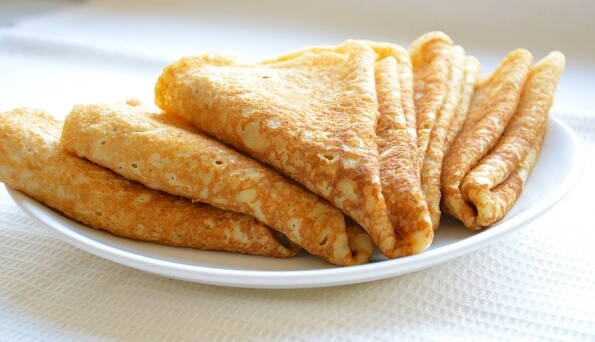

Blini (Russian Pancakes)

Description
The recipe for thin pancakes with milk.
Ingredients
- flour - 100 g
- milk - 150 ml
- water - 50 ml
- egg - 1 pc
- sunflower oil
- sugar - 1 tsp
- salt - 1 pinch
Steps
- Add sugar, eggs, oil to warm milk.
- Add the sifted flour and mix thoroughly until smooth. The dough should be liquid and lump-free.
- Heat a frying pan. Grease with the oil. Fry the pancakes over medium heat until golden for 2-3 minutes.
- Then the other side. Place the cooked pancakes on a plate in stacks, brushing each with butter.
- Enjoy!